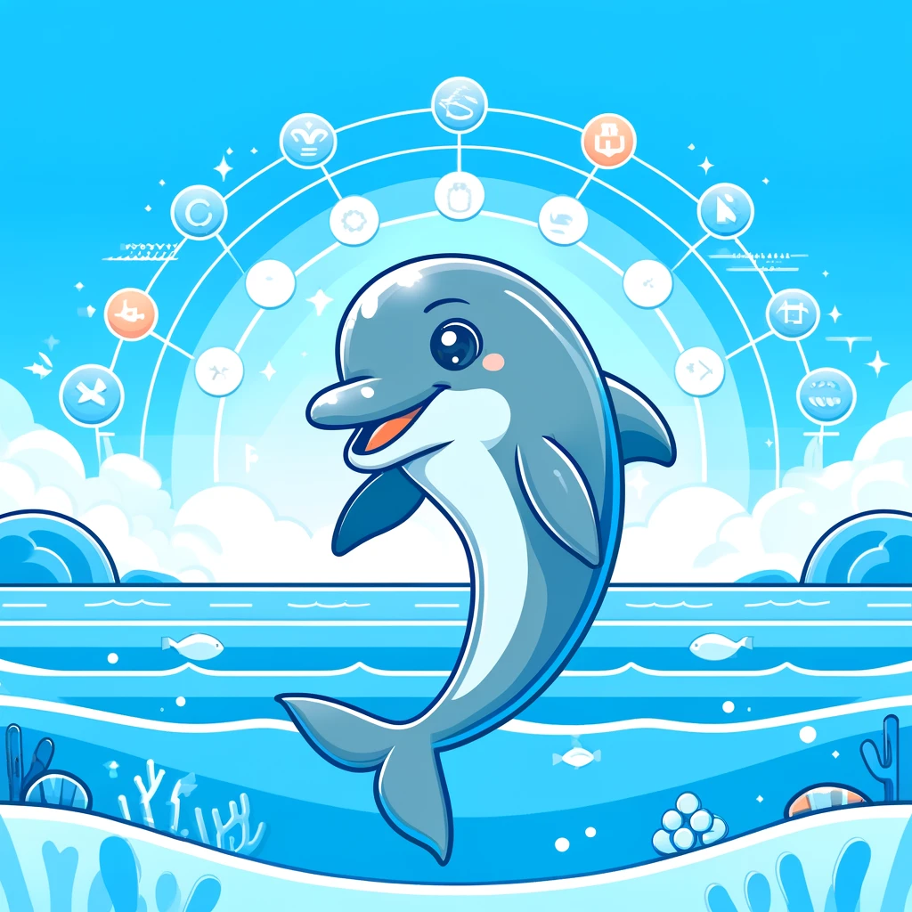
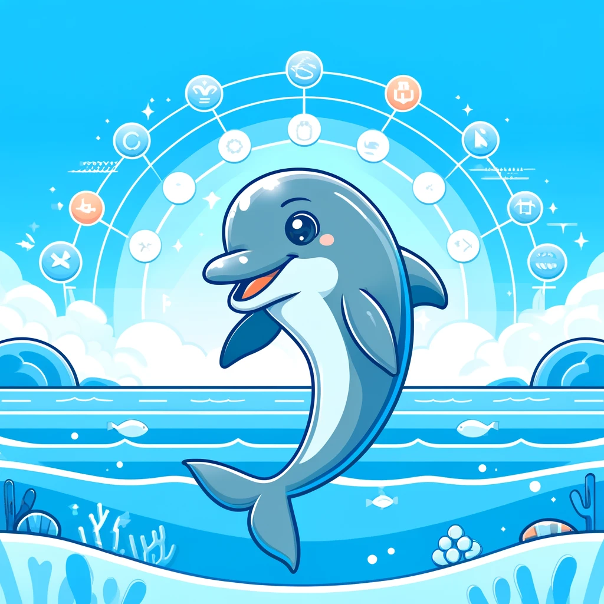

여우
자유로운 예술가
여우는 기민하고 빠른 반응을 보이며, 환경에 빠르게 적응하고 새로운 상황에 능동적으로 대처할 수 있습니다.
예술적이고 감각적인 성향이 강해 창의적이고 독창적인 방식으로 문제를 해결하고 자신을 표현합니다.
또한, 매우 유연하고 적응력이 뛰어나며,변화에 쉽게 대응할 수 있는 능력을 지니고 있습니다.
여우는 지적 호기심이 많아 사람이나 상황을 쉽게 파악하고,새로운 정보를 탐구하고 학습하는 것을 즐깁니다.
장점
• 높은 적응력 : 여우는 변화하는 환경에 빠르게 적응하고, 다양한 상황에서 유연하게 대처할 수 있습니다.
• 창의성과 독창성 : 창의적이고 예술적인 해결책을 찾는 능력이 뛰어나며, 독창적인 아이디어를 통해 문제를 해결합니다.
• 감각적 즐거움 추구 : 감각적인 즐거움을 중시하며, 아름다움과 예술을 통해 자신을 표현합니다.
• 유연한 사고 : 고정된 틀에 얽매이지 않고, 자유로운 사고를 통해 새로운 방법을 모색합니다.
단점
• 우유부단함 : 때로는 결정을 내리는 데 어려움을 겪을 수 있으며, 선택을 미루거나 고민하는 경향이 있습니다.
• 계획 부족 : 즉흥적인 성향이 강해, 장기적인 계획을 세우는 데 어려움을 느낄 수 있습니다.
• 감정적 민감성 : 감정적으로 민감하여, 비판이나 갈등 상황에서 쉽게 상처받을 수 있습니다.
• 감정 기복 : 감정에 민감하게 반응하기 때문에, 기분에 따라 행동이 변할 수 있습니다.
• 궁합이 좋은 동물은?
 

유니콘 & 돌고래
여우와 유니콘은 둘 다 창의적이고 감각적인 성향을 지니고 있으며,
서로에게 영감을 주고받을 수 있습니다. 이들은 함께 모험을 즐기고 새로운 아이디어를 탐구할 수 있습니다.
여우와 돌고래는 모두 활발하고 감각적인 성향이 있어,
함께 다양한 활동을 즐기고 서로의 감정을 이해할 수 있습니다.
• 궁합이 안맞는 동물은?


코끼리 & 개미
코끼리는 체계적이고 계획적인 성향이 강해, 여우의 자유롭고 즉흥적인 성향을 이해하기 어려워할 수 있습니다.
개미는 조직적이고 규율을 중시하며, 여우의 유연하고 자유로운 성향과 상충될 수 있습니다.